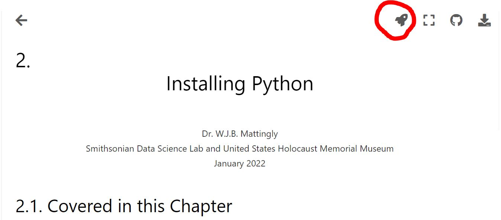
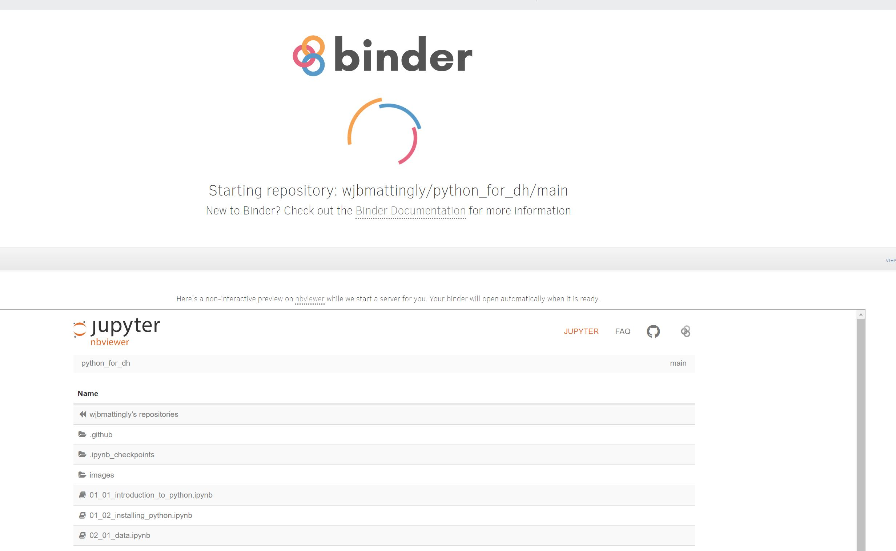
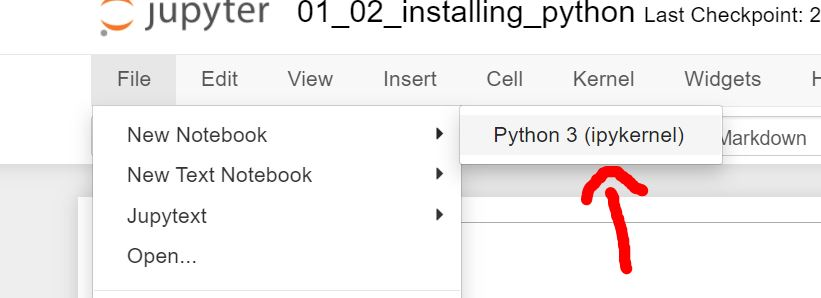
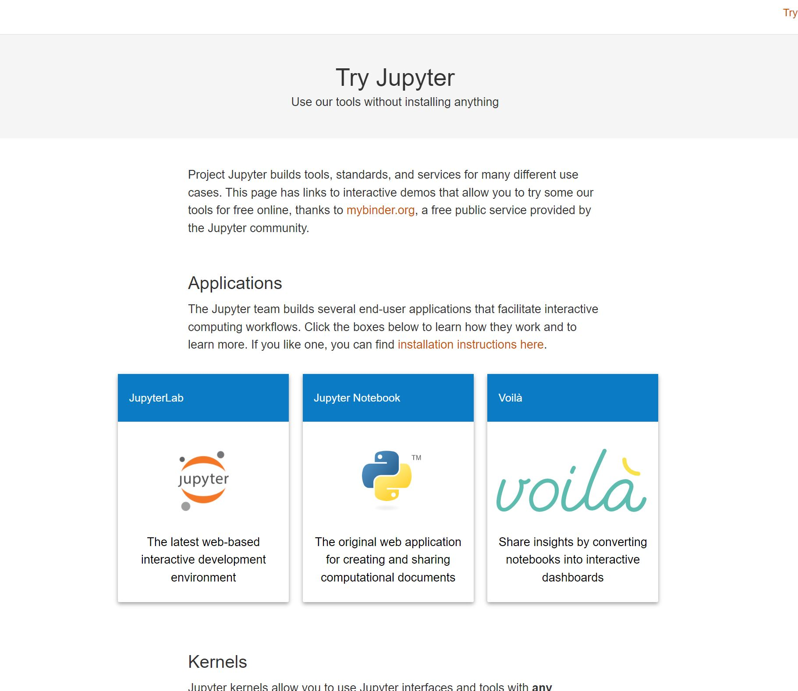

Installing Python
Contents
2. Installing Python ¶
2.1. Covered in this Chapter¶
2.2. Introduction¶
The most challenging thing about working with Python (or any programming language) is learning how to install it correctly. Why is this such a challenge? Because installing Python differs dramatically by operating system and version of operating system. I present to you three different ways you can start programming Python from the easiest to the more challenging.
Using the free built-in Binder feature of this textbooko
Using a free online Jupyter Notebook
Installing Python locally via Anaconda Navigator and using Jupyter-Lab
2.3. Using Binder from this JupyterBook¶
Perhaps the easiest solution to getting started with Python, is to not even bother installing it. If you have access to this textbook, then you likely have internet access. If that is the case, then you can create a binder environment from this textbook. To begin, put your mouse over the rocket ship icon in the top-left portion of the page.
{kind=link}
A button that says binder should emerge that says “Binder”. Click it.

At this stage, your screen should look like this:
{kind=link}
If it does, then sit back and relax. It may take a few minutes as binder builds the environment. Once Binder is finished, click on File in the top left corner of the screen and then select New Notebook

After this, select Python 3 (ipykernal). This will open a fresh, new notebook.
{kind=link}
Now you should have a new notebook that looks like this:
2.4. Using Jupyter Notebooks Online¶
If the entire process of installing these two pieces of software is too much to handle right now and you simply want to dive in and start coding, that’s okay! You can! You do not need to download and install Python on your local computer. Instead, you can use free online compilers that allow you follow along with nearly all of this textbook without issue.
If this is your view at the moment, then click the link this link: https://jupyter.org/try
Once on the page click the picture that says Jupyter Notebook
{kind=link}
After that, you will see a screen that looks like this:
After a few minutes, the environment will load and you should see a notebook that looks like this:
From here, you can input code in cells and execute that code, using the buttons up top:
2.5. Installing Python Locally¶
If you wish to install Python locally and it is your first time, there are many problems that can surface. For this reason, I am now recommending all students install via Anaconda Navigator. It adds extra steps into the installation process, but it eliminates the potential for mistakes to occur. If a mistake occurs during the install process, it could mean that you write a program that never executes.
Anaconda Navigator is a user-friendly interface that handles the installation for you. It also allows for you to create environments, which are small areas on your computer that have a unique version of Python and libraries installed. We will learn more about this in Part 06 when we explore libraries.
In this chapter, I will walk you through the steps of installing Anaconda Navigator on your machine, regardless of operating system. In addition, I highly encourage you to watch the video on how to do this.
When we write code in Python, we do so a few different ways, depending on that code’s use. Because this is a textbook and the code I am writing is for presentation purposes, I am using a Jupyter Notebook. Other times, you may write a program in an IDE, or an Integrated Development Environment. Some of these include PyCharm, Atom, etc. In other cases, you will use Python in the terminal to perform quick tasks on data in a directory. Anaconda Navigator removes the need for you to learn how to do all of this because it allows for you to easily install Jupyter-Lab which functions like an IDE but is a bit more forgiving. In addition, you can call terminal sessions. I know these terms do not make sense right now, but as your understanding of programming expands, this paragraph will make more sense. For now, simply trust me that Anaconda Navigator and Jupyter-Lab (both of which we install in this chapter), make your start to learning to code much, much simpler.